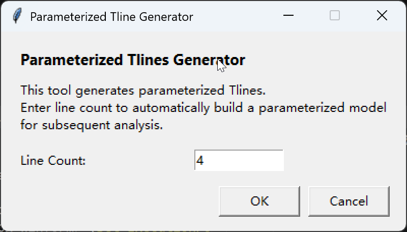

Q2D Parameterized Transmission Line Generator (q2d_TlineGenerator)
Overview
q2d_TlineGenerator is a quick modeling tool for Ansys Q2D Extractor. It automatically generates a parameterized multi-line transmission-line cross-section. The tool provides a minimal GUI where the user specifies the line count, and it then creates a new 2D Extractor design in AEDT with conductors, dielectrics, materials, surface roughness settings, and default solution setup.
Typical use cases include:
- Quickly building parallel transmission-line Q2D cross-sections
- Creating a reusable starting template for impedance, coupling, and RLGC analysis
- Running parameter studies on line width, line spacing, and dielectric values
Requirements
- Runtime: Ansys Electronics Desktop (AEDT)
- Design Type: Q2D Extractor
- Execution Mode: Python menu script
- GUI Dependency: Tkinter
Tool Location
Toolbox installation directory/
├── UserLib/
│ └── Toolkits/
│ └── q2d_TlineGenerator/
│ └── TlineGenerator.py (main script)
└── ...
Menu Configuration
<SubMenu Type="MenuItem"
Name="q2d_TlineGenerator"
ExecuteType="Python"
Path="$UserLib\toolkits\q2d_TlineGenerator\TlineGenerator.py" />
Interface
When the tool starts, it opens a small dialog with the following controls:
- Line Count: Number of transmission lines to generate
- OK: Starts model creation
- Cancel: Closes the dialog without creating a model

Input Rules
- Only positive integers are accepted
- The default value is
4 - If the value is empty, non-integer, or less than or equal to 0, the tool shows an error dialog
Automatically Generated Content
After OK is clicked, the tool inserts a new 2D Extractor design into the current AEDT project and creates the following items.
1. Parameter Variables
The tool creates a group of local variables based on the requested line count so the generated model can be tuned later inside AEDT.
Width and Spacing
w_line1_top~w_lineN_top: Top width of each linew_line1_bot~w_lineN_bot: Bottom width of each lines_line1_line2~s_line(N-1)_lineN: Spacing between adjacent liness_left,s_right: Left and right edge margins
Thickness and Dielectric Parameters
T_gnd_top,T_gnd_bot: Top and bottom reference-plane thicknessT_line: Trace thicknessH_core: Lower core dielectric thicknessH_pp: Upper prepreg dielectric thickness
Auto-Positioning Variables
The tool also creates the following position variables to place each line automatically:
line1_left,line1_rightline2_left,line2_right- ...
lineN_left,lineN_rightmax_right: Total width boundary of the full cross-section
2. Material Parameters
Project-level material variables are created so dielectric and conductor values can be edited in one place:
$pp_dk,$core_dk,$fill_dk$pp_df,$core_df,$fill_df$cond_line,$cond_top_gnd,$cond_bot_gnd
Default examples:
- Relative permittivity:
3.6 - Loss tangent:
0.008 - Conductivity:
5.8e7
3. Geometry Objects
The tool creates the following objects in the 3D Modeler:
tline1~tlineN: Parameterized transmission-line conductorsgnd_bot: Bottom reference groundgnd_top: Top reference groundcore: Core dielectricfill: Fill dielectric around the tracespp: Upper prepreg dielectric
Behavior details:
- Each line uses a trapezoidal cross-section so top and bottom widths can differ
- Ground width follows
max_rightautomatically - Dielectric and conductor regions are positioned by variables for later optimization
4. Surface Roughness Model
The tool assigns Huray surface roughness parameters to both signal lines and ground planes.
Trace Roughness Variables
huray_radius_line_lefthuray_radius_line_tophuray_radius_line_righthuray_radius_line_bothuray_ratio_line_lefthuray_ratio_line_tophuray_ratio_line_righthuray_ratio_line_bot
Ground Roughness Variables
huray_radius_gnd_tophuray_radius_gnd_bothuray_ratio_gnd_tophuray_ratio_gnd_bot
The default roughness radius is 0.5um and the default ratio is 2.9.
5. Boundary and Solution Setup
The tool also completes these Q2D settings automatically:
- Assigns
gnd_botandgnd_topas reference grounds - Assigns each
tlineXas an independent signal line - Creates analysis setup
Setup1 - Sets the adaptive frequency to
10GHz - Inserts frequency sweep
Sweep1
Default Sweep Range
The sweep uses two logarithmic ranges:
1Hzto1GHz1GHzto100GHz
Workflow
Launch q2d_TlineGenerator
↓
Open the input dialog
↓
Enter Line Count
↓
Create a new 2D Extractor design
↓
Create local and project variables
↓
Create dielectric and conductor materials
↓
Generate transmission lines, grounds, and dielectric layers
↓
Assign signal and ground boundaries
↓
Apply the Huray roughness model
↓
Insert Setup1 and Sweep1
↓
Finish parameterized model initialization
Recommended Usage
Steps
- Open the target project in AEDT
- Launch
q2d_TlineGeneratorfrom the Toolbox menu - Enter the required line count, such as
4,8, or16 - Click OK to generate the initial model
- Edit line width, spacing, dielectric thickness, and material parameters in the new Q2D design
- Run simulation or create Optimetrics sweeps as needed
Common Variables to Tune Afterwards
w_line*_top,w_line*_bots_line*_line*T_lineH_core,H_pp$core_dk,$pp_dk,$fill_dk
Common Applications
Parallel Bus Cross-Section Modeling
When evaluating coupling, characteristic impedance, or loss across multiple parallel traces, this tool can generate a standardized starting cross-section quickly and then be refined by adjusting widths and spacing.
Process Window Studies
Because the top and bottom widths are independent, the tool is also suitable for modeling etched trapezoidal cross-sections and studying how fabrication variation affects impedance and crosstalk.
Roughness Sensitivity Studies
By changing the Huray-related variables, the tool can be used to study how conductor roughness impacts high-frequency loss and RLGC parameters.
Notes
- Each execution inserts a new
2D Extractordesign into the current project - The tool builds a parameterized model only; it does not automatically start the solver
- If no active AEDT desktop context is found, the script attempts to initialize one through its external interface path
- Larger line counts will increase the later boundary, mesh, and solution scale significantly
- After creation, check whether the default variable values match the intended board material stack and copper thickness
Troubleshooting
| Issue | Cause | Suggested Fix |
|---|---|---|
| No model is generated after launch | No valid AEDT session is available | Launch the tool from Toolbox or inside an AEDT session |
| Invalid input message appears | Line Count is not a positive integer |
Enter an integer greater than 0 |
| Geometry is created but dimensions are incorrect | Default variables do not match the design target | Review and adjust w_line*, s_left/right, H_core, and related variables |
| High-frequency loss is too large or too small | Roughness values do not match the actual process | Adjust the Huray radius and ratio parameters |
Related Resources
- Q2D Extractor documentation
- Toolbox guide:
ToolBox/index.md - Menu configuration guide:
ToolBox/AddItem.md